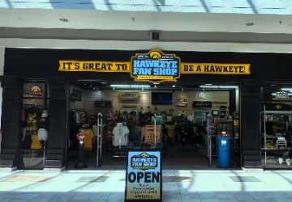

cott
Labz
cott
Labz
Measure what matters. Build it right. Improve it continuously.
Every digital experience creates a story. The value comes from understanding what it's really telling you. Reliable measurement and connected data replace assumptions with evidence. We build the digital systems that collect, measure, and improve business performance.
Measure
Analytics & Data Solutions
- Analytics Implementation
-
We instrument sites, apps, and products around how your team actually makes decisions - not around whatever a tag manager sets up by default.
- Data Quality & Validation
-
Broken tags and duplicate events erode trust in your numbers fast. We catch the silent failures before they end up in a board deck.
- Reporting & Data Integration
-
Your CRM, ad platforms, and product analytics rarely tell the same story. We reconcile them into one view your team can actually act on.
Build
Web Development & Digital Solutions
- Custom Website Development
-
We design and ship sites around how your specific visitors browse and buy, instead of stretching a generic template to fit.
- Web Applications & Integrations
-
From internal tools to customer-facing apps, we build on top of the systems your business already runs, rather than forcing a rebuild from scratch.
- Performance & Scalability
-
Code that holds up under a traffic spike and three years of feature changes, not just a clean first demo.
Improve
Optimization & Continuous Improvement
- User Behavior Analysis
-
Session recordings, funnels, and heatmaps show us exactly where people hesitate, stall out, or click away - not just that they left.
- Experimentation & Validation
-
Instead of guessing which version works better, we run structured tests so the call gets made on evidence, not opinion.
- Performance Optimization
-
Launch day is day one, not the finish line. We keep tuning speed and usability as your product and traffic evolve.
Tailored Digital Platforms
Every platform we build starts from a real operational problem, not a template. Whether that's a retailer selling out of a stadium concourse on game day or a neighborhood shop moving online for the first time, we design systems that hold up under real-world pressure - traffic spikes, inventory chaos, and everything in between.
Retail Systems
One system of record, online and in-store. Read the case study.
Fast Checkout
POS systems tuned to keep lines moving. Read the case study.

Local Business
Enterprise tools, small-shop budget. Read the case study.
Main Street
Modern tools for a decades-old storefront. Read the case study.
Scalable Data Precision
The sections above cover what we do. This is how we do it - the specific disciplines that keep a data platform honest as it grows past the first dashboard.
Architecture
We map how data should flow before a single tag goes live, so the system doesn't need to be torn up and redone in a year.
Tracking
Event names, parameters, and triggers get documented and versioned, so nobody's guessing what a metric actually measures.
Data Quality
Automated checks flag anomalies - a metric that jumps 40% overnight gets a second look before it reaches your team.
Auditing
We open the hood on an existing setup and hand you a plain list of what's broken, what's missing, and what to fix first.
Data Integration
Marketing platforms, CRMs, and internal databases get wired together so nobody's stitching CSVs by hand every Monday.
Experimentation
Test frameworks built with proper statistical guardrails, so a "winning" variant is actually winning and not just noise.
Optimization
We look for the specific friction points costing you conversions - a slow checkout step, a confusing form, a dead-end page.
Analytics
Dashboards built for the people who'll actually open them weekly, not a wall of charts nobody reads twice.
Data Pipelines
SQL and Python pipelines that run on a schedule and fail loudly when something upstream breaks, instead of quietly going stale.
Data Strategy
We help you decide what's actually worth measuring before you spend budget instrumenting things nobody will look at.
Roadmaps
A sequenced plan for what gets built next, tied to business priorities rather than whatever's technically easiest.
Advisory
An outside second opinion when your team needs to sanity check a vendor pitch, a migration, or a build-vs-buy call.